Bavaria · CD38 Ag01Barranquilla · Atlántico
Traspasospaso a paso
Cómo se registra un viaje, cómo se planea el día y cómo se corrige lo que salió mal. Cada paso con su foto de la pantalla, y con lo que la aplicación hace por su cuenta — que es casi siempre lo que confunde.
Registrar un viaje
Lo hace quien mueve · operador o supervisor
Cada viaje que sale del muelle se registra aquí, en el momento en que sale. El cumplido del plan no se escribe en ninguna parte: sube solo con lo que se registra en esta pantalla. Si un viaje no se registra, para la aplicación no salió.

De un vistazo
- Escoge el día — abre en hoy.
- Mira el turno — ya viene escogido por la hora.
- ¿Con carga o vacío?
- Escoge el tipo, del plan del turno.
- La placa, de la lista.
- De dónde sale y a dónde va.
- Cuántos viajes, y la carga si la sabes.
- Registrar viaje.
Escoge el día
La pantalla abre siempre en hoy, que es lo que se usa el 95 % de las veces. La barra de arriba sirve para lo demás: cerrar el día anterior a las cinco de la mañana, o meter un viaje que se quedó sin registrar.
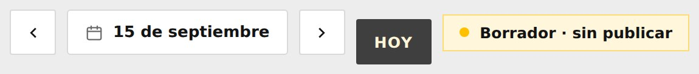
Mira el turno
La aplicación ya escogió el turno por la hora que es. Solo hay que tocarlo si estás registrando algo del turno anterior — pasa cuando el relevo entra y quedó un viaje sin meter.
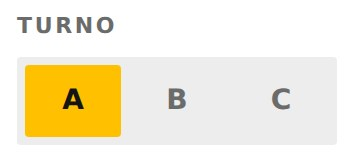
¿Con carga o vacío?
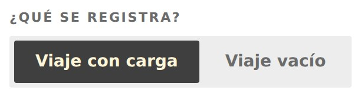
Un viaje vacío no lleva tipo, ni placa, ni ruta: es un número de viajes del turno y ya. Cuestan igual y no mueven producto, por eso se cuentan aparte y nunca se suman al cumplido.
Escoge el tipo — del plan
Los tipos que salen no son una lista cualquiera: son lo que este turno prometió mover. Cada uno dice cuánto falta y cómo va.
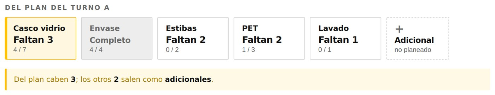
La placa, de la lista
Ya no se escribe a mano. Se despliega y se toca.
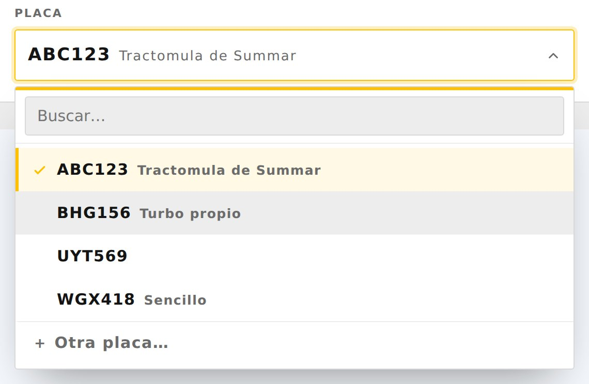
abc 123, ABC-123 y abc123
son el mismo vehículo.
De dónde sale y a dónde va
Dos listas de bodegas, las mismas en las dos puntas: la misma bodega es origen unas veces y destino otras.
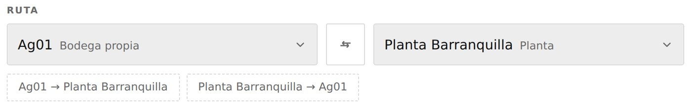
Esas rutas frecuentes no las mantiene nadie: salen de lo que de verdad se ha movido.
Cuántos viajes, y la carga si la sabes
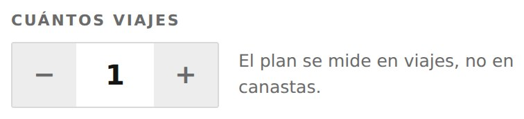
Casi siempre es 1. Sube el número solo cuando estás metiendo varios viajes iguales de una vez.
La cantidad es opcional. Si no la sabes, déjala vacía: un dato inventado es peor que un dato que falta.
Registrar viaje
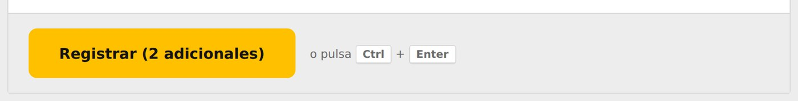
Desde el computador también sirve Ctrl + Enter. El viaje aparece de una en «Viajes de hoy» y el cumplido del turno sube solo.
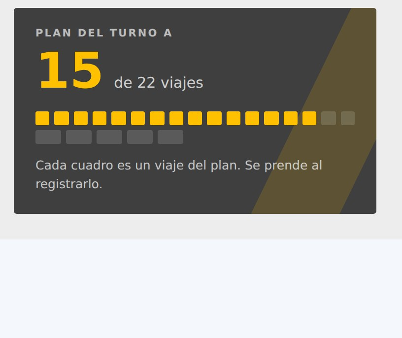
Me equivoqué
Anular: quien lo registró o el administrador · Corregir: solo el administrador
Son dos cosas distintas y conviene no confundirlas. Anular dice «esto no pasó». Corregir dice «pasó, pero no como quedó escrito».
El viaje no salió: anular
En «Viajes de hoy», botón Anular. Pide un motivo, y es obligatorio.
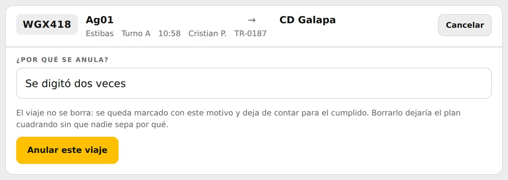
El viaje no desaparece — se queda a la vista, marcado, con quién lo anuló y por qué, y deja de contar para el cumplido en el mismo segundo.
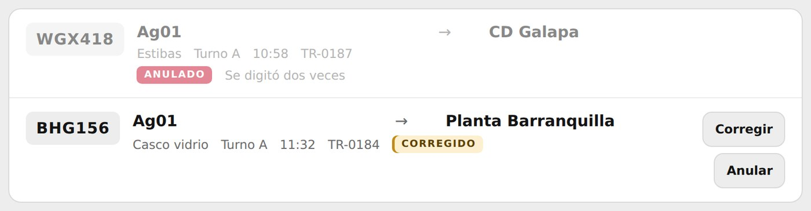
Lo puede anular quien lo registró o un administrador. Un supervisor no puede anular lo del turno de al lado.
El viaje salió, pero el dato está mal: corregir
Por una placa con un dígito cambiado no hay que anular y volver a teclear ocho campos. El administrador tiene Corregir en cada viaje: día, turno, tipo, placa, origen, destino, cuántos viajes, cantidad, unidad y la observación. También pasarlo de con carga a vacío y al revés.

Si el viaje ya está anulado, primero se devuelve y después se corrige. Y el código
TR-#### no cambia nunca: es el nombre del viaje.
Planear el día
Supervisor o administrador
El plan es lo que el centro promete mover: cuántos viajes de cada tipo, en cada turno. Es contra esto que se mide todo lo demás.

Llena la rejilla
Escribe el número, o usa el − y el +. Un cero es lo mismo que dejarlo vacío.
No empieces de cero: usa los atajos
Casi todos los días se parecen. A la derecha hay tres:
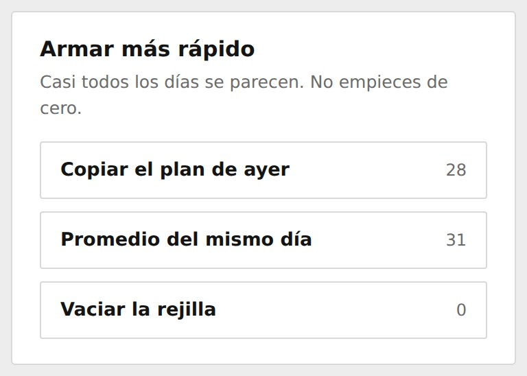
- Copiar el plan de ayer — trae la rejilla de ayer tal cual.
- Promedio del mismo día — lo que de verdad salió los últimos lunes, si hoy es lunes. Sirve para no copiar cuatro veces un plan que estuvo mal.
- Vaciar la rejilla — deja todo en cero para empezar a mano.
Cualquiera de los tres solo llena la rejilla. Nada se guarda hasta que tú lo guardes.
Los viajes vacíos, abajo del total
Van en la misma tabla para que caigan bajo la columna de su turno, pero no son una fila más: no llevan tipo. No entran en el cumplimiento — se cuentan aparte, porque cuestan igual y no mueven producto.
Guardar borrador, o publicar
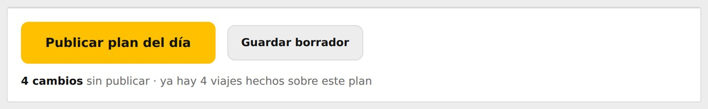
Guardar borrador deja el trabajo hecho sin que el turno lo vea: siguen viendo el plan anterior hasta que publiques. Sirve para armar el día de mañana con calma.
Publicar plan del día lo pone a contar. Desde ese momento, cada viaje que se registre se compara con él.
Planear otro día, o varios
Supervisor o administrador
Otro día: el calendario
La misma barra de días de Registrar, arriba del todo. La aplicación abre siempre en hoy; el botón con la fecha abre el calendario y desde ahí te mueves a cualquier día, hacia adelante o hacia atrás.

La misma rejilla en varios días
«Aplicar a varios días». Tocas el primer día y después el último, y marcas qué días de la semana entran — para dejar los domingos fuera, por ejemplo.

Cambiar o borrar un plan
Supervisor o administrador
Cambiar lo que ya publicaste
Abre el día en el calendario. La rejilla ya viene con lo que publicaste, no vacía. Cambias el número y le das otra vez a Publicar plan del día: eso reemplaza el plan de ese día, no lo suma.
Dejar el día sin plan
Poner todas las celdas en cero no borra el plan. Para eso está, al final del pie, «Borrar el plan del día».

Leer el control
Todos
Seis tarjetas, y cierran entre ellas. La confusión de siempre es entre las dos últimas, así que vale la pena leerlas despacio una vez.

| Tarjeta | Qué es |
|---|---|
| Viajes planeados | Lo que el plan publicado prometió mover. Los vacíos no entran. |
| Viajes cumplidos | Los del plan que de verdad salieron. Nadie escribe esta cifra: sube con lo que se registra. |
| Adicionales | Los que se movieron por encima del plan, o sin que hubiera plan. |
| Viajes vacíos | Aparte. No entran en ninguno de los dos porcentajes. |
| % Adherencia | Cumplidos del plan ÷ planeados. Tope 100 %. 24 de 28 = 86 %. |
| % Cumplimiento | (Cumplidos + adicionales) ÷ planeados. Puede pasar de 100 %. 29 de 28 = 104 %. |
El maestro
Supervisor o administrador
Las bodegas, los tipos de viaje y las placas son datos de este centro, no código. El día que abran una bodega o entre un camión nuevo, nadie tiene que esperar un despliegue. Lo que se agrega aquí es exactamente lo que se puede escoger al registrar.

Agregar
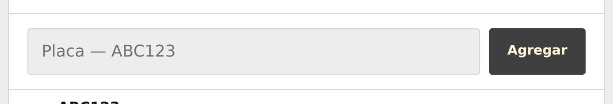
Renombrar, apagar, borrar
Todo eso vive en el menú de los ⋯, al final de cada renglón.
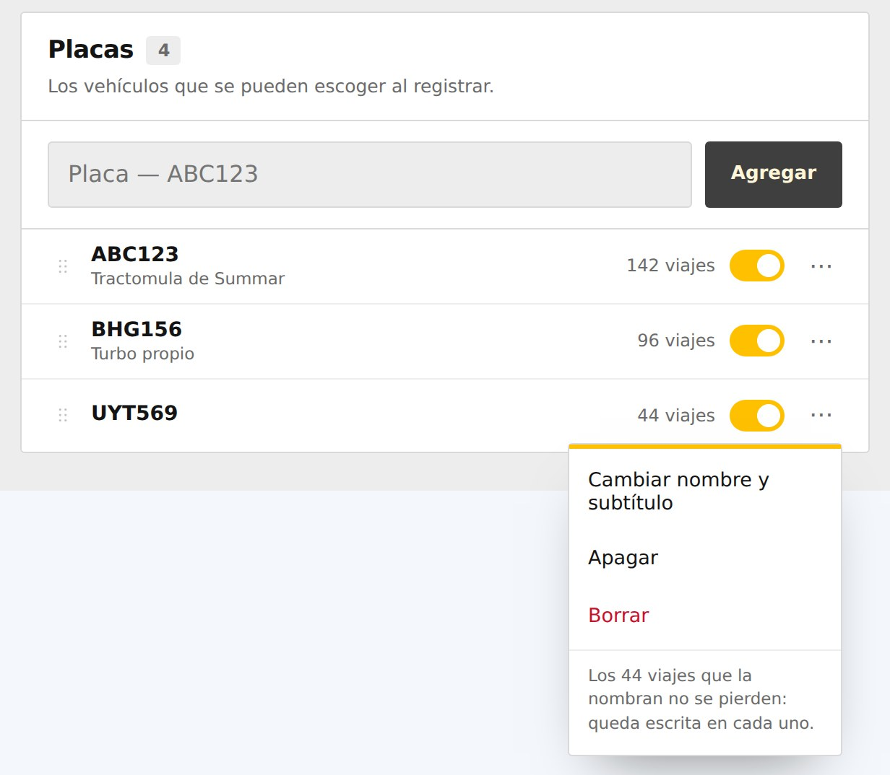
El interruptor apaga sin borrar: deja de poderse escoger al registrar, pero los viajes y las planeaciones viejas lo siguen nombrando. Es lo que casi siempre quieres.
Para cambiar el orden en que salen al registrar, se arrastra por las rayitas de la izquierda: el orden de aquí es el orden de allá.
| Qué | ¿Se puede borrar? |
|---|---|
| Bodegas y tipos | Solo si nunca se usaron. Un viaje los nombra por dentro y la base no deja borrar algo que está en uso. |
| Placas | Siempre. La placa se guarda escrita dentro de cada viaje, así que borrarla del maestro no toca ningún viaje: solo deja de ofrecerse. |
Posibles duplicados
Abajo del todo, la aplicación avisa cuando el mismo sitio quedó escrito de dos formas.
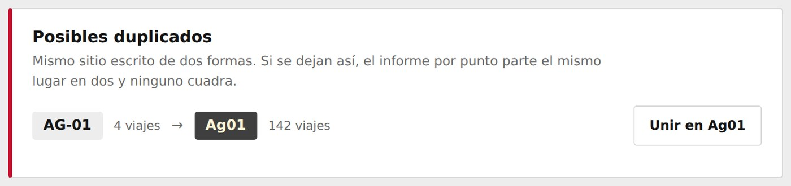
En el celular
Todos
Todo funciona igual en el teléfono. Lo único distinto es la rejilla del plan: no caben tres turnos en una pantalla, así que se rueda de lado.

La sombra del borde izquierdo es la señal de que hay más tabla a la derecha.
Lo que la app no deja hacer
Todos
No son fallas: son reglas, y están en la base de datos, no en la pantalla. Si te sale uno de estos mensajes, esto es lo que significa.
| El mensaje | Qué pasó |
|---|---|
| El viaje sale y llega al mismo sitio | Origen y destino son la misma bodega. Y lo detecta aunque estén escritos distinto: Ag01 y ag 01 son el mismo sitio. |
| Hay que decir por qué se anula | El motivo de una anulación no es opcional. Anular sin motivo es borrar. |
| Solo quien registró el viaje o un administrador puede anularlo | El supervisor del turno de al lado no puede tocar lo del otro turno. |
| Corregir un viaje registrado es solo del administrador | Si te equivocaste al registrar y no eres administrador: anúlalo y vuelve a registrarlo. |
| Ese viaje está anulado | Primero se devuelve, después se corrige. Un viaje anulado que además se edita es una fila que se contradice. |
| No hay nada sin publicar en ese día | La rejilla está igual que lo publicado. Si querías dejar el día sin plan, es «Borrar el plan del día». |
| Ese tipo de viaje no existe o está desactivado | Alguien lo apagó en el maestro. Se prende ahí y se vuelve a intentar. |
| La placa … es muy corta | Se esperan al menos 5 caracteres, sin contar espacios ni guiones. |